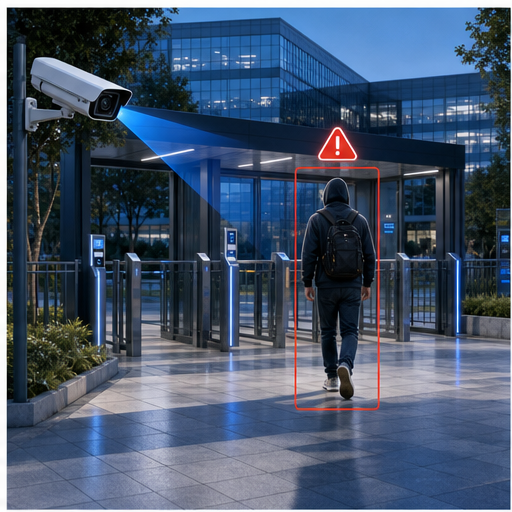
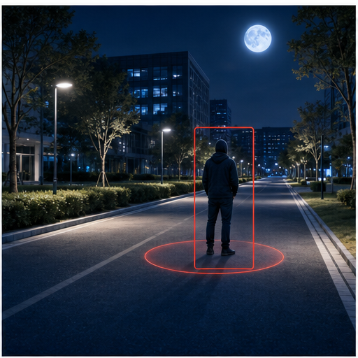
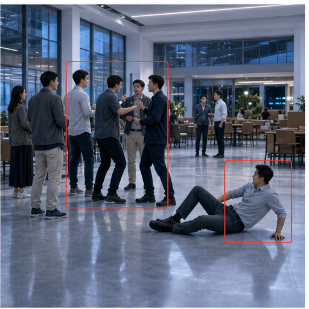
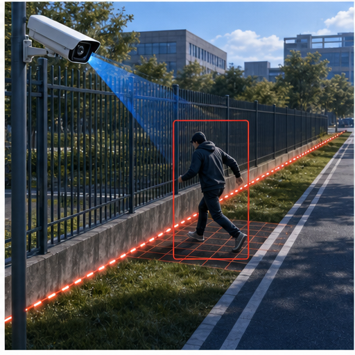
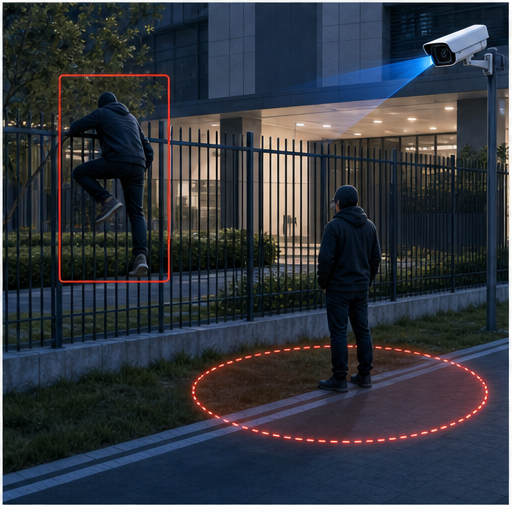
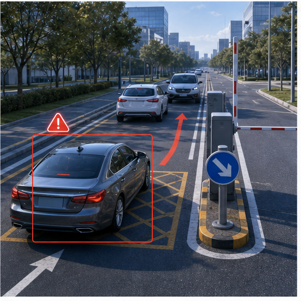

一张图看全域风险
聚合摄像头点位、门禁记录、访客通行、车辆进出和周界报警，呈现实时风险分布。
应用模块 01
面向园区安保、消控、应急值守与管理层，把视频监控、门禁、访客、周界报警、停车系统和弱联网设备状态统一接入，形成一个可看、可判、可派单、可复盘的安防总平台。
09:42 A 区东侧周界出现异常停留，已联动最近摄像机。
10:18 3 号楼消防通道占用，已生成物业协同工单。
11:06 主入口访客证件校验异常，已通知岗亭复核。
园区综合安防指挥
视频监控、门禁、访客、周界报警和停车系统统一进入事件池，安保人员可以在一处完成态势查看、事件研判、联动处置和结果追踪。
聚合摄像头点位、门禁记录、访客通行、车辆进出和周界报警，呈现实时风险分布。
告警触发后自动带出位置、人员、车辆、视频片段和历史记录，减少人工跨系统检索。
支持通知岗亭、调度巡逻、联动门禁和派发工单，处置过程全程留痕。

面向园区出入口、楼宇大堂、停车场和办公区域，识别未授权进入、尾随通行和异常闯入。

对夜间园区道路、广场、停车场和楼宇外场的异常停留、徘徊、越界行为进行提醒。

对公共大厅、食堂、出入口等人流密集区域识别人群聚集、冲突苗头和摔倒事件。

围墙、围栏、园区边界和施工边界支持入侵、翻越、跨线等异常识别并联动处置。

对围栏、楼宇入口、停车场边界和重点通道识别翻越护栏、跨线进入和长时间徘徊。

识别园区道路、停车出入口和装卸区的违停、逆行、占道、拥堵等通行秩序问题。
重点区域智能巡检
先覆盖高风险空间的视觉识别和巡检任务，后续可继续接入更多物联感知数据，让巡检从“人工看现场”升级为“系统先发现”。
关注无人值守配电间、泵房、机房的非授权进入、异常停留和门禁异常。
对实验室、施工区、设备间等场景识别安全帽、防护服、反光衣等佩戴规范。
识别消防通道堆物、车辆占用、门前遮挡等风险，推送物业与安保协同处理。
针对仓储区、设备间、走廊和出入口识别烟火、积水、门异常开启等隐患。
设备异常预警与运维协同
现阶段优先纳入设备在线、离线、告警、容量、开门和通知状态，形成轻量预警和工单协同；后续再扩展到传感器、能耗、环境和设备运行数据。
发现关键点位视频中断后，自动生成巡检或维修工单。
识别门禁长开、异常开门、强行进入等状态并联动安保复核。
纳管交换机、网关、摄像头链路等弱联网状态，定位影响范围。
对录像存储、事件附件和日志空间做容量提醒，避免关键证据丢失。
先记录告警状态、影响设备和处理人，后续接入电量、负载等物联数据。
对接电梯故障通知，联动值班、物业、安保和应急处置流程。